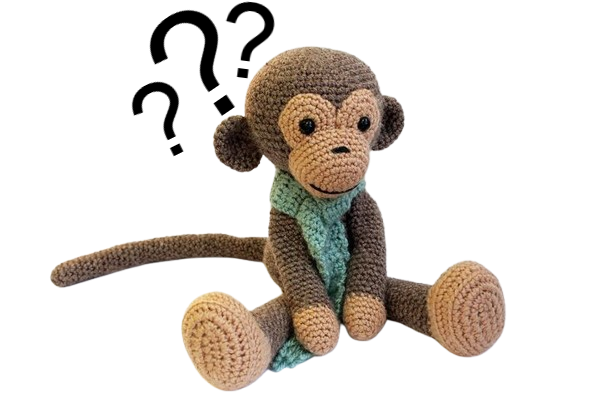

Join Us In Doing
Crochet

WHAT IS CROCHET?
Crochet is a craft technique that involves using a hooked needle, called a crochet hook, to interlock loops of yarn, thread, or other fibers into a fabric. Unlike knitting, which uses two needles, crochet is done with a single hook, allowing for greater flexibility in creating intricate patterns and designs. This versatile art form can be used to make a variety of items, including clothing, blankets, accessories, and decorative pieces. Crochet stitches range from simple chains to complex lacework, making it a skill that can be enjoyed by beginners and advanced crafters alike. The craft has been passed down through generations and continues to evolve with new styles, patterns, and materials.